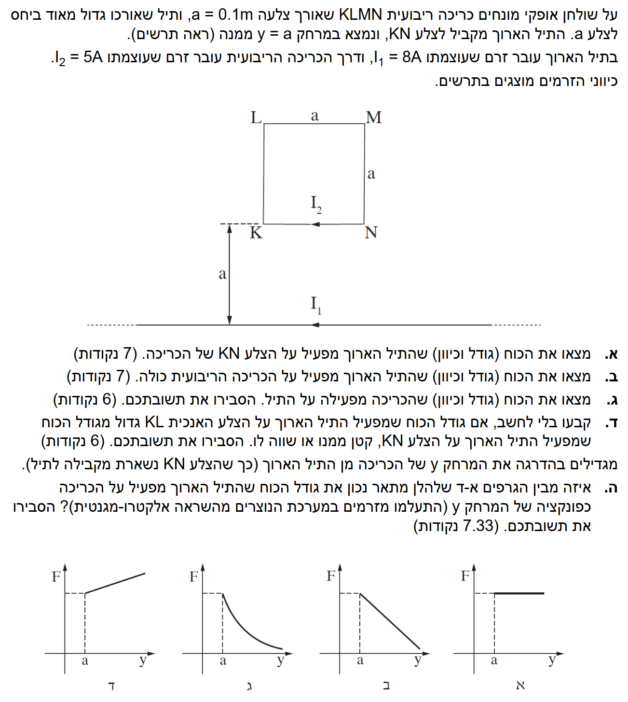

פתרון שאלה 4 - חשמל ומגנטיות
בגרות פיזיקה 5 יח"ל, 2012
הכוח המגנטי בין תיל ישר לכריכה, כולל ניתוח כוחות וגרפים.
עודכן:
--- --:--:--

[תמונת השאלה המקורית]
לא נמצאה תמונה בשם question-image.png באותה תיקייה.
מה נתון: לפני שניגש לפתרון, נרכז את הנתונים הראשוניים ונבדוק המרת יחידות (MKS):
- אורך צלעות הכריכה: \( a = 0.1 m \) (כבר ביחידות MKS - מטרים).
- מרחק הצלע התחתונה KN מהתיל: \( y = a = 0.1 m \) (ביחידות MKS).
- זרם בתיל הארוך: \( I_1 = 8 A \) שמאלה (MKS).
- זרם בכריכה הריבועית: \( I_2 = 5 A \) (MKS). על פי התרשים, כיוון הזרם על צלע KN הוא גם כן שמאלה (כלומר, הכריכה מסתובבת נגד כיוון השעון, אבל על צלע KN הזרמים מקבילים ובאותו כיוון).
- פרמיאביליות הריק (מדף הנוסחאות): \( \mu_0 = 4\pi \cdot 10^{-7} \frac{T \cdot m}{A} \).
מה מחפשים: את גודל וכיוון הכוח המגנטי שהתיל הארוך (הנושא זרם \( I_1 \)) מפעיל על צלע KN של הכריכה (הנושאת זרם \( I_2 \)).
נוסחאות ועקרונות בשימוש:
\( \frac{F}{l} = \frac{\mu_0}{2\pi}\frac{I_1 I_2}{d} \)
נוסחה זו מדף הנוסחאות מתארת את הכוח ליחידת אורך בין שני תילים מקבילים. נבודד את \( F \) על ידי הכפלה באורך התיל המושפע \( l \). נשתמש גם בכלל ששני זרמים מקבילים ובאותו כיוון מושכים זה את זה.
הצבה ופתרון:
נחלץ את הכוח \( F \) מתוך הנוסחה ונציב את הנתונים. המרחק בין התילים הוא \( d = y = 0.1 m \) ואורך הצלע המושפעת הוא \( l = a = 0.1 m \):
\[ F_{KN} = \frac{\mu_0 \cdot I_1 \cdot I_2 \cdot l}{2\pi \cdot d} \]
\[ F_{KN} = \frac{4\pi \cdot 10^{-7} \cdot 8 \cdot 5 \cdot 0.1}{2\pi \cdot 0.1} \]
\[ F_{KN} = 2 \cdot 10^{-7} \cdot \frac{40 \cdot 0.1}{0.1} \]
\[ F_{KN} = 2 \cdot 10^{-7} \cdot 40 = 8 \cdot 10^{-6} N \]
לגבי הכיוון: מכיוון שהזרם בתיל הארוך והזרם בצלע KN זורמים שניהם שמאלה, מדובר בזרמים מקבילים ובאותו כיוון. כוחות מגנטיים בין זרמים באותו כיוון יוצרים כוח משיכה. לכן, התיל יפעיל כוח על צלע KN לכיוון מטה (אל עבר התיל הארוך).
גודל הכוח: \( F_{KN} = 8 \cdot 10^{-6} N \)
כיוון הכוח: כלפי מטה (נמשך לתיל הארוך)
טיפ מורה:
שימו לב שאפשר גם לחשב בשני שלבים: קודם לחשב את השדה המגנטי \( B \) שהתיל הארוך יוצר באזור צלע KN באמצעות כלל יד ימין (השדה הוא פנימה לתוך הדף), ואז להשתמש בנוסחה \( F = IlB\sin\alpha \) על צלע KN. התוצאה והכיוון ייצאו זהים לחלוטין! זה דרך מצוינת לבדוק את עצמכם.
מה נתון: נתוני השאלה הקודמים נשארים תקפים. בנוסף, כעת אנו בוחנים את כל 4 צלעות הכריכה (KN, NM, ML, LK).
- המרחק של צלע LM (העליונה) מהתיל הארוך הוא \( d = y + a = 0.1 + 0.1 = 0.2 m \).
- זרם בצלע LM זורם ימינה (מנוגד לכיוון \( I_1 \)).
- הזרמים בצלעות KL (למעלה) ו- NM (למטה) מקבילים זה לזה אך הפוכים בכיוונם.
מה מחפשים: את גודל וכיוון הכוח השקול (Total Force) שהתיל הארוך מפעיל על הכריכה הריבועית כולה \( \Sigma F \).
נוסחאות ועקרונות בשימוש:
\( \Sigma \vec{F} = \vec{F}_{KN} + \vec{F}_{LM} + \vec{F}_{KL} + \vec{F}_{MN} \)
\( \vec{F} = I\vec{l} \times \vec{B} \)
אנו משתמשים בעקרון הסופרפוזיציה - חיבור וקטורי של כל הכוחות הפועלים על כל אחת מארבע צלעות המסגרת.
הצבה ופתרון:
נבחן את הכוחות על כל צלעות הכריכה:
1. צלעות צדדיות (KL ו- NM): השדה המגנטי שיוצר התיל בתוך שטח הכריכה הוא בניצב לדף ופנימה (לפי כלל יד ימין). הזרם בצלע KL הוא למעלה, לכן הכוח עליה הוא שמאלה. הזרם בצלע NM הוא למטה, לכן הכוח עליה הוא ימינה. מכיוון שהצלעות סימטריות ונמצאות באותם מרחקים מהתיל, הכוחות מנוגדים ושווים בגודלם, ולכן מבטלים זה את זה (\( F_{KL} + F_{MN} = 0 \)).
2. צלע עליונה (LM): המרחק שלה מהתיל הוא \( 0.2 m \). הזרם בצלע זו הפוך לזרם בתיל (זורם ימינה בעוד התיל זורם שמאלה). לכן נוצר כוח דחייה (כלפי מעלה). נחשב את גודלו:
\[ F_{LM} = \frac{\mu_0 \cdot I_1 \cdot I_2 \cdot l}{2\pi \cdot (y+a)} \]
\[ F_{LM} = \frac{4\pi \cdot 10^{-7} \cdot 8 \cdot 5 \cdot 0.1}{2\pi \cdot 0.2} = 2 \cdot 10^{-7} \cdot \frac{40}{0.2} \cdot 0.1 = 4 \cdot 10^{-6} N \]
3. כוח שקול: קיבלנו כוח של \( 8 \cdot 10^{-6} N \) מטה (משיכה) וכוח של \( 4 \cdot 10^{-6} N \) מעלה (דחייה). נגדיר את ציר ה-y כלפי מטה כחיובי לצורך החישוב:
\[ \Sigma F = F_{KN} - F_{LM} \]
\[ \Sigma F = 8 \cdot 10^{-6} - 4 \cdot 10^{-6} = 4 \cdot 10^{-6} N \]
מכיוון שהכוח על הצלע הקרובה חזק יותר, הכוח השקול יהיה בכיוון כוח המשיכה (כלפי מטה).
גודל הכוח השקול: \( \Sigma F = 4 \cdot 10^{-6} N \)
כיוון הכוח: כלפי מטה (נמשך לתיל הארוך)
טיפ מורה: תמיד זכרו שכאשר יש לנו כריכה מלבנית בקרבת תיל ישר, הכוחות על הצלעות המאונכות לתיל תמיד מבטלים זה את זה. הקרב נקבע רק בין הצלע הקרובה והצלע הרחוקה. הצלע הקרובה תמיד "מנצחת" כי השדה המגנטי חזק יותר ככל שקרובים יותר לתיל!
מה נתון: מהסעיף הקודם אנו יודעים שהתיל הארוך מפעיל כוח שקול של \( 4 \cdot 10^{-6} N \) כלפי מטה על הכריכה.
מה מחפשים: את גודל וכיוון הכוח השקול שהכריכה מפעילה בחזרה על התיל הארוך.
נוסחאות ועקרונות בשימוש:
\( \vec{F}_{1 \to 2} = -\vec{F}_{2 \to 1} \)
עקרון זה הוא החוק השלישי של ניוטון (חוק פעולה ותגובה).
הצבה ופתרון:
לפי החוק השלישי של ניוטון, אם גוף א' (התיל הארוך) מפעיל כוח על גוף ב' (הכריכה הריבועית), אז גוף ב' חייב להפעיל כוח על גוף א' שהוא שווה בגודלו ומנוגד בכיוונו.
היות ומצאנו בסעיף ב' שהתיל מושך את הכריכה כלפי מטה בכוח של \( 4 \cdot 10^{-6} N \), אזי הכריכה תמשוך את התיל כלפי מעלה באותו כוח בדיוק.
גודל הכוח: \( F = 4 \cdot 10^{-6} N \)
כיוון הכוח: כלפי מעלה (נמשך לכריכה)
טיפ מורה: זה סעיף מתנה! מטרתו לבדוק אם אתם מבינים עקרונות פיזיקליים מעבר להצבת מספרים בנוסחאות. החוק השלישי של ניוטון עובד תמיד, גם לכוחות מרחוק כמו כבידה וכוחות אלקטרומגנטיים.
מה נתון: אנו בוחנים שתי צלעות שונות של הכריכה: צלע KN (הקרובה לתיל) וצלע KL (הניצבת לתיל). לשתי הצלעות אותו אורך בדיוק (\( a = 0.1 m \)) ואותו זרם (\( I_2 = 5 A \)).
מה מחפשים: לקבוע ללא חישוב האם גודל הכוח על צלע KL גדול, קטן, או שווה לכוח על צלע KN, ולהסביר.
נוסחאות ועקרונות בשימוש:
\( F = I l B \sin\alpha \)
\( B = \frac{\mu_0 I}{2\pi r} \)
אנו נסמכים על ההבנה שעוצמת השדה המגנטי \( B \) דועכת ככל שמתרחקים מהתיל (\( r \) גדל).
הצבה ופתרון:
כדי להשוות בין הכוחות, נבחן את השדה המגנטי שהתיל הארוך מפעיל על כל אחת מהצלעות:
- צלע KN: כולה נמצאת במרחק קבוע של \( y = a \) מהתיל. לכן היא מרגישה לאורך כל אורכה שדה מגנטי אחיד ומקסימלי עבור כריכה זו.
- צלע KL: היא ניצבת לתיל, ולכן המרחק שלה מהתיל משתנה! הנקודה K נמצאת במרחק \( a \), אך ככל שעולים לאורך הצלע (לכיוון L), המרחק מהתיל הולך וגדל (עד למרחק \( 2a \)).
מכיוון שעוצמת השדה המגנטי של תיל ארוך דועכת עם המרחק (\( B \propto \frac{1}{r} \)), השדה המגנטי הממוצע שפועל על הצלע KL קטן מהשדה המגנטי שפועל על צלע KN.
כיוון שהכוח המגנטי יחסי לעוצמת השדה המגנטי (\( F \propto B \)), והאורך והזרם של שתי הצלעות זהים, הכוח הכולל שמופעל על צלע KL חייב להיות קטן מהכוח המופעל על צלע KN.
הכוח על צלע KL קטן מהכוח על צלע KN.
טיפ מורה: בשאלות "ללא חישוב" אל תתפתו לכתוב אינטגרלים או לעשות ממוצעים מסובכים. הבוחן מחפש את הלוגיקה הפיזיקלית שלכם. זיהוי שהשדה בממוצע חלש יותר באחת הצלעות הוא הנימוק המושלם.
מה נתון: מרחיקים את הכריכה מהתיל הארוך כך שהמרחק ההתחלתי \( y \) משתנה וגדל. כל שאר הנתונים ללא שינוי, ומתעלמים מהשראה אלקטרומגנטית (כלומר, הזרמים נשארים קבועים בזמן התנועה). נתונים ארבעה גרפים (א', ב', ג', ד') המייצגים אופציות לקשר בין הכוח המגנטי \( F \) לבין המרחק \( y \).
מה מחפשים: לזהות ולהסביר איזה מבין 4 הגרפים הוא הנכון.
נוסחאות ועקרונות בשימוש:
\( F_{total} = F_{KN} - F_{LM} \)
נבנה פונקציה אלגברית המבטאת את הכוח הכולל כתלות במשתנה \( y \), וננתח את תכונותיה המתמטיות (האם היא ליניארית? האם היא יורדת לאפס? וכו').
הצבה ופתרון:
נרשום את משוואת הכוח השקול כפונקציה של \( y \) באופן כללי:
\[ F(y) = \frac{\mu_0 \cdot I_1 \cdot I_2 \cdot a}{2\pi} \cdot \frac{1}{y} - \frac{\mu_0 \cdot I_1 \cdot I_2 \cdot a}{2\pi} \cdot \frac{1}{y+a} \]
נוציא גורם משותף קבוע (שנקרא לו לצורך הפשטות \( C \)):
\[ F(y) = C \cdot \left( \frac{1}{y} - \frac{1}{y+a} \right) \]
נעשה מכנה משותף בתוך הסוגריים:
\[ F(y) = C \cdot \left( \frac{(y+a) - y}{y(y+a)} \right) = C \cdot \frac{a}{y^2 + ay} \]
כעת, על בסיס המשוואה שקיבלנו, ננתח את האפשרויות ונפסול אותן אחת-אחת:
- גרף א': בגרף זה גודל הכוח השקול אינו משתנה עם המרחק. מכיוון שראינו במשוואה שהכוח כן תלוי במרחק \( y \), גרף זה נפסל.
- גרף ב': הגודל אומנם משתנה ואף קטן עם המרחק, אך הירידה המוצגת היא ליניארית (קו ישר). המשוואה שקיבלנו אינה משוואה של קו ישר (המשתנה \( y \) מופיע במכנה, ואף בריבוע), ולכן גרף זה נפסל.
- גרף ד': גודל הכוח בגרף זה עולה עם המרחק. על פי המשוואה שלנו, ככל שהמרחק \( y \) גדל, המכנה גדל והשבר כולו (הכוח) בהכרח קטן. לכן גם גרף זה נפסל.
מכאן נותרנו עם אפשרות אחת: רק גרף ג' מראה ירידה שאינה ליניארית (אינה קו ישר) עם המרחק, ולכן זהו הגרף המתאים.
הגרף הנכון הוא גרף ג'.
טיפ מורה: כדי להצליח בסעיפי תיאוריה שמערבים גרפים, העצה הטובה ביותר היא לכתוב את הפונקציה עצמה! ברגע שאתם רואים ביטוי שיש בו משתנה במכנה (\( 1/y \)), מיד אפשר לפסול קווים ישרים או גרפים עולים. הפיזיקה והמתמטיקה מדברות כאן באותה שפה.